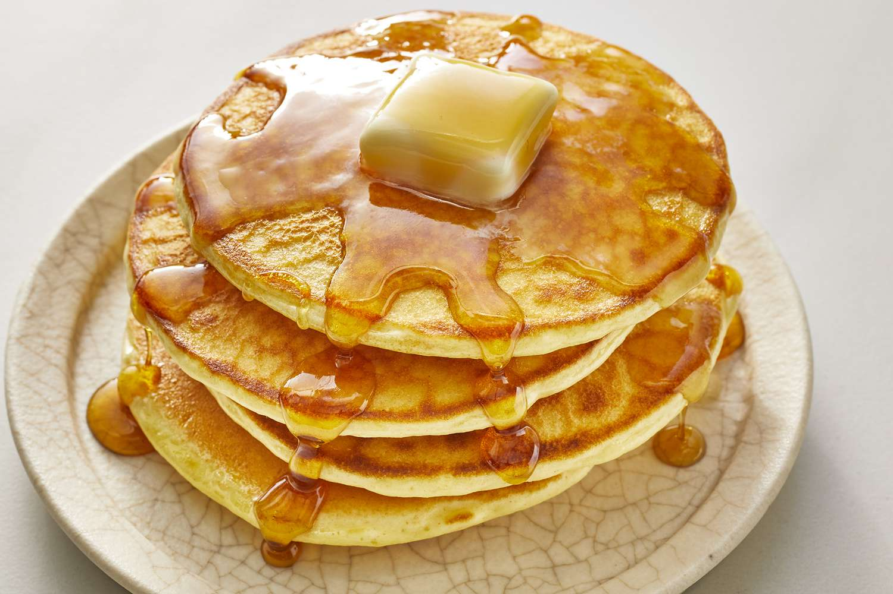

Pancakes

Description
Perfect pancakes are easier to make than you think. This pancake recipe
produces thick, fluffy, and all-around delicious pancakes with just a few
ingredients that are probably already in your kitchen (and it's so much
better than the boxed stuff).
Ingredients
- Flour
- Baking powder
- Sugar
- Salt
- Milk and butter
- Eggs
Steps
- Sift the dry ingredients together.
- Make a well, then add the wet ingredients. Stir to combine.
- Scoop the batter onto a hot griddle or pan.
- Cook for two to three minutes, then flip.
- Continue cooking until brown on both sides.
- Your pancake will tell you when it's ready to flip. Wait until bubbles
start to form on the top and the edges look dry and set. This will
usually take about two to three minutes on each side.
- Finish off with some butter and syrup.
- Serve.
Take me back to the homepage